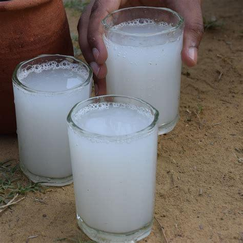

A visual summary of palm-based items
A visual summary of palm-based items
Nungu (Ice Apple)
Palm Candy
Palm Jaggery
Palm Baskets
Palm Craft
Palm Leaf Hat

Palm Leaf Muram

Palm Leaf Plates
Spice Box

Leaf Basket

Thatching Roof

Mini Basket

Palmyra Sprout

Wood Furniture
Palm Product Details
| Image | Palm Product | Source (Part of Tree) | Making Process (Step-by-Step) | Uses |
|---|---|---|---|---|
| Neera (Palm Juice) | Flower sap | 1. Tap unopened palm flower. 2. Collect sweet sap (Neera) in pots. 3. Filter and chill immediately. |
Refreshing natural drink, rich in nutrients. | |
| Palm Jaggery (Karuppatti) | Neera (sap) | 1. Boil Neera in large pans. 2. Stir until thick and sticky. 3. Pour into moulds and cool. |
Natural sweetener, used in sweets & drinks. | |
| Palm Sugar | Neera (sap) | 1. Boil and stir sap till thick. 2. Dry the thick syrup. 3. Crush or powder into sugar. |
Used in desserts, tea, coffee, etc. | |
| Palm Oil | Fruit pulp (oil palm) | 1. Harvest ripe fruits. 2. Steam and press fruits. 3. Separate oil and refine. |
Cooking, cosmetics, soaps, and biodiesel. | |
| Palm Leaf Products | Leaves | 1. Cut and dry leaves. 2. Weave or fold into mats, baskets, fans, plates. |
Eco-friendly household and decorative items. | |
| Palm Fibre (Coir) | Trunk or leaf base | 1. Extract fibres. 2. Clean and dry. 3. Spin into ropes or mats. |
Brushes, ropes, mats, handicrafts. | |
|  | Palm Wine (Toddy) | Fermented sap | 1. Collect Neera and allow to ferment naturally for 6–8 hours. 2. Filter and store in clay pots. |
Traditional alcoholic drink (local use). |
 |
Palm Vinegar | Fermented Neera | 1. Allow fermented Neera to age longer. 2. Filter and bottle. |
Used in cooking and pickles. |
| Palm Seed Craft Items | Palm seeds | 1. Collect dried seeds. 2. Carve, polish, or paint for crafts/jewellery. |
Handicrafts, souvenirs. | |
| Palm Wood Products | Trunk | 1. Cut matured trunks 2. Dry and saw into planks. 3. Polish and shape. |
Furniture, flooring, construction. |